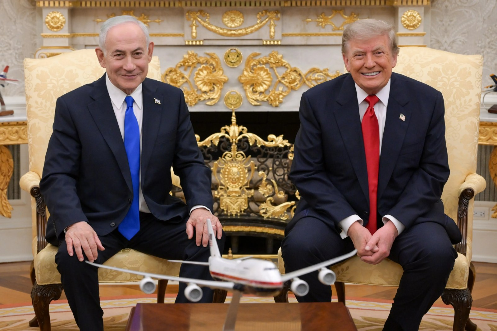

Imagen: Ma'ayan Toaf (GPO)/Handout/Anadolu vía Getty Images
Trump se estaba preparando para una escalada con Irán. Esto era lo que se estimaba como más probable entre los círculos de analistas. De acuerdo con esos estimados, Washington estaría pensando en una escalada de corta duración—asumiendo que efectivamente pudiese controlarla—en la que EE. UU. bombardearía no solo infraestructura civil y energética de Irán, sino que también lanzaría parte de su armamento más poderoso, como la “madre de todas las bombas”, apodo con el que se conoce a la MOAB, contra instalaciones nucleares iraníes. Ahora, sin embargo, tras los resultados electorales de noviembre y la presión interna para poner fin a esa guerra, Trump ha tenido que recalcular. Hoy, por tanto, los mismos analistas estiman que las probabilidades de una escalada no han desaparecido, pero sí se han reducido considerablemente. No obstante, esta ecuación queda incompleta sin añadir el factor Netanyahu, quien tiene sus propias metas y estrategias para conseguirlas. Unas notas al respecto:
1. A pesar de la presión interna que se ha generado en EE. UU. contra la guerra en Irán, lo que queda claro es que Trump no puede simplemente aceptar las precondiciones que exige Teherán—por ejemplo, el retiro estadounidense de la región, el reconocimiento del derecho de Teherán a cobrar cuotas por el paso del estrecho de Ormuz o el pago de sustanciales reparaciones por los daños de la guerra—sin que Irán acepte concesiones mucho mayores en temas como sus proyectos nuclear y de misiles, cosa que hasta ahora no está ocurriendo.
2. Pero, por otro lado, escalar la guerra pensando en una nueva operación “corta” tampoco es una gran opción, si se considera que las respuestas iraníes podrían activar una espiral difícil de detener. Esto obligaría a Trump a enfrentarse con el Congreso, con varios miembros de su propia administración y, una vez más, con la mayor parte de la sociedad estadounidense.
3. Por consiguiente, la opción menos mala para el presidente estadounidense es mantener el actual statu quo (ni guerra ni paz), sosteniendo el bloqueo con ataques ocasionales contra Irán, e incrementando la presión económica sobre ese país, con el objetivo de desgastar al régimen hasta conseguir su eventual flexibilización.
4. Una escalada como iniciativa de Trump o como producto de esta guerra de desgaste no puede descartarse, pero no parece el escenario más probable por ahora. Al menos no si solo consideramos el factor Washington.
5. El problema es que tenemos que incorporar otros componentes que no necesariamente están bajo el control de Trump. Un ejemplo es el tema de los hutíes de Yemen contra Arabia Saudita, del que hablaremos en otro momento. Pero otro, muy evidente, es la situación interna en Israel.
Situación interna en Israel y el factor Netanyahu
1. Como contexto, el principal opositor de Netanyahu, Eisenkot, ha recibido el encargo del presidente de ese país para formar gobierno. Dado que la coalición encabezada por él solo cuenta con 48 escaños y necesita el respaldo de al menos 61, uno de los posibles escenarios que se están dibujando para ese país sería un gobierno de minoría, pero con el respaldo externo de todos o al menos parte de los 19 escaños que ocupan los partidos árabes israelíes. De no concretarse esa posibilidad, Netanyahu tendría una oportunidad para intentar conformar un gobierno, o bien, se convocaría a nuevas elecciones, en las cuales se estima que podría salir mejor librado.
2. Para Netanyahu, quien desde hace casi dos décadas ha buscado todo tipo de estrategias para conservar o recuperar la primera magistratura de su país, pero sobre quien, además, pesan tres casos de corrupción activos (sin mencionar una orden de aprehensión por parte de la CPI), dejar el poder justo en este momento no es una opción. Su problema es que solo cuenta con 53 escaños y no parece probable que, bajo el actual parlamento y el contexto político, consiga sumar los ocho que le faltan. Su mejor alternativa, entonces, está en conseguir prolongar su mandato interino lo más posible y, de no conseguir convencer a algún partido opositor para sumarse a su coalición, buscar prolongar esta situación con la mirada puesta en nuevas elecciones.
3. Al mismo tiempo, Netanyahu es un actor político que termina beneficiándose del miedo y del riesgo percibido. Las encuestas, una y otra vez, confirman que, cuando Israel escala sus operativos militares contra sus enemigos, especialmente contra Irán, los niveles de aprobación de ese primer ministro tienden a elevarse.
4. Por tanto, al menos en teoría, una nueva escalada contra Teherán le resultaría benéfica en cualquiera de los escenarios de política interna que señalo y, de manera particular, si ese país necesitara entrar en un nuevo proceso electoral.
5. Llama la atención la cantidad de señales que Jerusalén está enviando en este sentido, precisamente ahora que se ha colocado a las fuerzas armadas en alerta máxima. Según un reporte de Haaretz, Eisenkot envió una carta formal a Netanyahu exigiéndole prudencia y moderación para evitar acciones militares contra Irán que no respondan a una amenaza inmediata y que puedan interrumpir la transición política en Israel. Eisenkot advirtió que estas decisiones podrían comprometer la democracia y colocar a los jefes de seguridad en una situación de conflicto constitucional. También solicitó a la fiscal general que obligue a Netanyahu a brindarle informes regulares sobre defensa. Por su parte, la oficina del primer ministro rechazó estas acusaciones, calificándolas de irresponsables, y afirmó que todas sus decisiones se basan exclusivamente en criterios de seguridad y en coordinación con el aparato de defensa.
6. Sin embargo, por lo que sabemos, este tema no solo está enfrentando al primer ministro con el líder opositor, sino también con otros actores, entre ellos el jefe del Estado Mayor de las Fuerzas de Defensa de Israel, Eyal Zamir. Este general, junto con otros mandos militares, ya se había opuesto previamente a los intentos de Netanyahu de impulsar un ataque contra Irán antes de las elecciones.
7. El factor central, no obstante, es que, mientras no se resuelva la formación de un nuevo gobierno israelí, Netanyahu, como primer ministro interino, es quien tiene la última palabra. Un ataque “preventivo” contra Irán por parte de Israel no deja de ser una posibilidad, lo que probablemente ocasionaría, por lo pronto, tres repercusiones: (a) interrumpiría el proceso político en Israel con base en la nueva emergencia; (b) activaría respuestas por parte de Irán que son difíciles de prever y que podrían no limitarse a Israel, con las consecuencias económicas y políticas correspondientes; y (c) posiblemente también abriría la puerta para que Trump tuviera que intervenir y afrontar la escalada que está buscando evitar.
No sabemos si finalmente Netanyahu se podrá salir con la suya. Hay que considerar que el nuevo parlamento ya ha sido juramentado y que hoy existe una oposición activa en Israel que, desde ese mismo parlamento, está ejerciendo un contrapeso importante frente al primer ministro. Tampoco podemos saber si una potencial escalada entre Israel e Irán pudiera o no ser contenida. Lo que sí parece un hecho es que Netanyahu no se conformará con el actual statu quo y seguirá tratando de encontrar justificaciones para una potencial operación contra Irán. Esto añade piezas a la ecuación que Trump necesita considerar si realmente desea evitar la escalada y privilegiar su estrategia de desgaste económico, que ya de suyo enfrenta enormes retos para ser eficaz.
CIPMEX · Centro de Investigación para la Paz México, A.C. · Paz que se piensa, paz que se construye